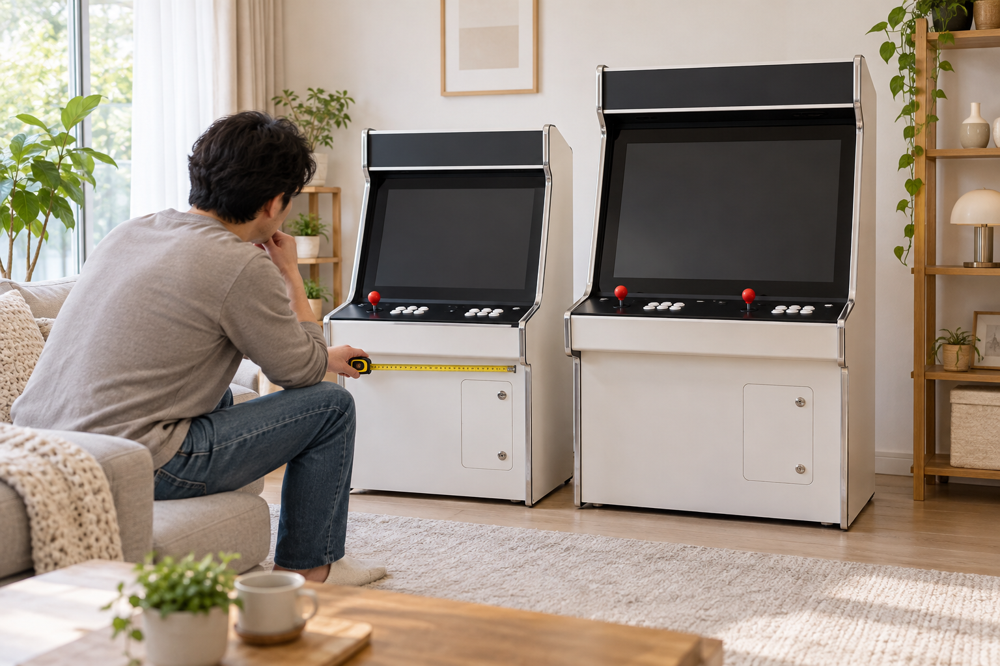
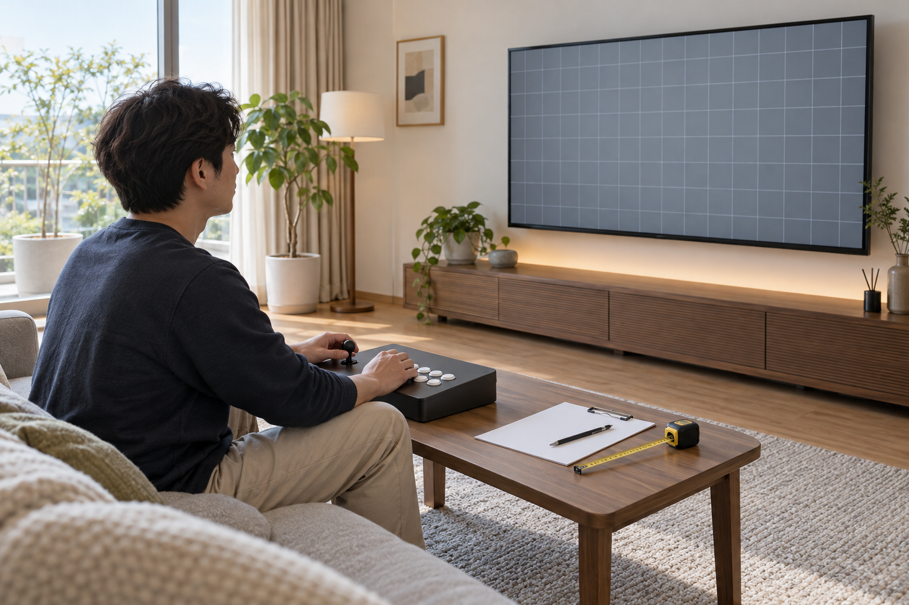

가정용 오락기 화면 크기는 화면 숫자만 비교하지 말고 실제 조작 위치에서 화면까지의 거리, 눈높이, 본체 전체 크기와 설치 공간을 함께 확인해야 합니다. 같은 크기 표기라도 일체형인지 TV 연결형인지에 따라 보는 거리와 조작 자세가 달라질 수 있으므로, 설치할 자리에 맞춘 배치를 먼저 정한 뒤 비교하세요.

화면 크기는 조작 위치에서 먼저 비교하세요
화면 앞에 서거나 앉아 조이스틱을 잡을 위치를 정하고, 그 자리에서 화면 전체가 한눈에 들어오는지 확인하세요. 매장이나 상품 사진만 볼 때는 화면이 크게 보일 수 있으므로 제품 전체 모습과 조작부에서 화면까지의 거리도 함께 살펴봐야 합니다. 가족이 함께 쓴다면 키와 자세가 다른 사람도 같은 위치에서 화면과 조작부를 편하게 확인할 수 있는지 비교하세요.
화면 크기는 숫자보다 실제 조작 위치에서 보이는 범위와 자세를 기준으로 비교해야 합니다.
조작부 배치를 고르는 기준은 오락기 조작부 형태 비교 방법에서도 확인할 수 있습니다.
제품 전체 크기와 설치 공간을 함께 보세요
화면이 커지면 본체의 폭이나 높이, 깊이도 달라질 수 있으므로 상품에 표시된 전체 외형 치수를 따로 확인하세요. 설치 자리의 벽·가구·문 여닫는 범위와 이동 동선을 재고, 화면 앞에 사람이 설 공간과 조작할 여유도 남겨야 합니다. 화면 크기만 맞고 본체가 자리를 넘으면 실제 사용과 청소, 이동이 불편해질 수 있습니다.
화면 비교는 본체 외형 치수와 설치 자리의 폭·깊이·높이를 함께 대조해야 완성됩니다.
- 상품에 표시된 화면 관련 정보와 본체 전체 치수
- 조작 위치에서 화면까지의 거리와 눈높이
- 문·가구·통로와 겹치지 않는 설치 여유
- 함께 사용할 사람의 서는 자세 또는 앉는 자세
설치 공간을 재는 순서는 가정용 오락기 설치 공간 측정 방법을 참고하세요.
같은 화면 크기라도 화면과 자세를 따로 확인하세요
화면 크기 표기가 같아도 본체 형태와 화면이 놓인 높이, 조작부와의 간격은 제품마다 다를 수 있습니다. 화면의 해상도나 화면 비율처럼 표시 품질과 관련된 항목은 판매 페이지의 실제 사양을 확인하고, 원하는 게임 화면이 어떻게 표시되는지는 해당 제품명으로 판매자에게 문의하세요. 임의로 화면 설정을 바꾸기보다 기본 상태에서 글자와 게임 화면이 알아보기 쉬운지 확인하는 편이 좋습니다.
같은 크기 표기라도 화면 높이와 조작부 간격이 다르면 실제 사용 자세는 달라질 수 있습니다.
노리박스 공개 제품 목록에는 이름에 ‘27+’와 ‘32+’가 포함된 일체형 상품, 그리고 별도의 TV에 연결하는 ‘TV연결형’ 상품이 함께 안내되어 있습니다. 따라서 상품명에 보이는 숫자만으로 모든 구성을 같은 방식으로 비교하지 말고, 각 판매 페이지의 화면·본체 사양과 연결 방식을 확인해야 합니다.

TV 연결형은 화면 크기보다 배치 자유도를 먼저 확인하세요
TV 연결형은 이미 사용하는 TV를 화면으로 쓸 수 있지만, 조작부를 놓을 책상이나 테이블과 TV 사이의 거리, 연결선 경로를 함께 정해야 합니다. TV가 크다는 이유만으로 조작부를 무조건 멀리 두지 말고, 화면을 보는 자리에서 조작이 편한지 실제 공간에서 확인하세요. 사용하는 TV의 입력 단자와 제품의 연결 방식도 주문 전에 정확한 상품명으로 대조해야 합니다.
TV 연결형은 화면 숫자보다 TV·조작부·좌석을 실제 공간에 어떻게 배치할지 먼저 비교해야 합니다.
노리박스 오락실게임기와 화면 구성이 다른 상품은 제품자세히보기에서 확인할 수 있습니다. 설치 자리와 사용할 자세를 정리한 뒤 화면 관련 사양이나 연결 방식이 불분명하면 연락하기에서 정확한 제품명과 함께 문의해 주세요.